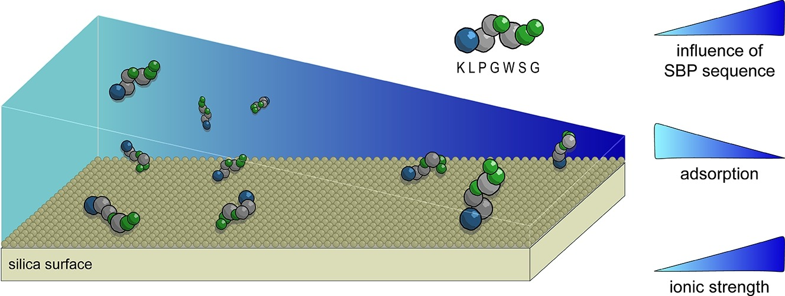
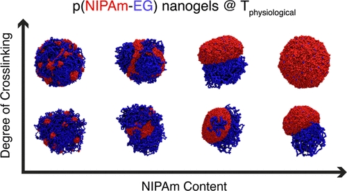
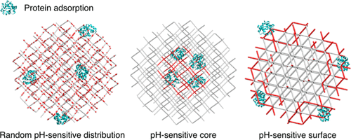

Mechanisms of Halomethane Adsorption on Functionalized Carbons: How Surface Chemistry Governs Selectivity in Realistic Gas Mixtures
C — Journal of Carbon Research, 12(1), 15 (2026)
Scientific output
Mechanisms of Halomethane Adsorption on Functionalized Carbons: How Surface Chemistry Governs Selectivity in Realistic Gas Mixtures
C — Journal of Carbon Research, 12(1), 15 (2026)

Unveiling the physical chemistry of silica binding peptide adsorption
Journal of Colloid and Interface Science, 702, 138819 (2026)

Impact of Network Functionalization on the Surface Properties and Behavior of Thermoresponsive Copolymeric Nanogels
Macromolecules, 58(15), 8511–8523 (2025)
Nanopore conductance controlled by pH: A Poisson–Nernst–Planck–Navier–Stokes model with polymer brushes
Chemical Physics, 595, 112663 (2025)
Computational Study on the Separation of Pentane Isomers in Functionalized UiO-66 Metal-Organic Frameworks
Separations, 12(6), 152 (2025)
Silica-binding peptides: physical chemistry and emerging biomaterials applications Review
Journal of Physics: Condensed Matter, 37(20), 203001 (2025)

Investigating the Impact of Network Functionalization on Protein Adsorption to Polymer Nanogels
The Journal of Physical Chemistry B, 128(1), 371–380 (2024)
Solvent effects on glyphosate deprotonation: DFT theoretical studies
Chemical Physics Impact, 6, 100140 (2023)
Competitive protein adsorption on charge regulating silica-like surfaces: the role of protonation equilibrium
Journal of Physics: Condensed Matter, 34(36), 364001 (2022)
Texture and surface sites of treated and as-prepared SWNT using experimental and simulation methods
Adsorption, 27(6), 909–923 (2021)